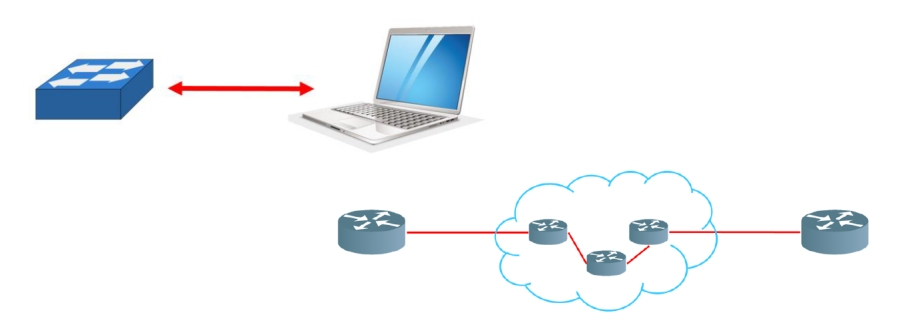

Topologia sieci określa sposób jej wykonania, topologie sieci LAN mogą być opisane
zarówno na płaszczyźnie fizycznej, jak i logicznej.
Topologia fizyczna określa geometryczną organizację sieci lokalnej, graficznie przedstawiając
jej kształt oraz strukturę
Topologia logiczna opisuje reguły komunikacji, z których korzystają komunikające się urządzenia.
Topologie logiczne:
- Topologia rozgłaszania
- Topologia żetonu
- Topologia punkt-punkt (point - point)
Topologia rozgłaszania - host wysyła dane do wszystkich hostów podłączonych do medium.
Topologia żetonu - kontroluje dostęp do sieci przez przekazywanie żetonu ( specjalnej ramki danych ).
Topologia punkt-punkt - dane są przesyłane od jednego urządzenia do drugiego za pomocą połączenia bezpośredniego lub lub z urządzeniami pośredniączymi.
Topologie fizyczne:
- Topologia magistrali
- Topologia pierścienia
- Topologia gwiazdy
Topologia magistrali - wszystkie urządzenia są podłączone do wspólnego medium.
Topologia pierścienia - każde z urządzenia podpięte jest dwoma sąsiadami tworząc zamknięty krąg.
Topologia gwiazdy - wszystkie urządzenia są podłączone do punktu centralnego będącego punktem dostępu do sieci.
Wady topologii fizycznej pierścienia:
- przerywania medium
- awaria jednego komputera wystarczy by przerwać działanie całej topologii
Zalety topologii fizycznej magistrali:
- niewielki koszt
Wady topologii fizycznej magistrali:
- niewielka przepustowość (maksymalnie do 10 Mb/s).
- podatność na awarię sieci
Topologia magistrali i rozgłoszeniowa

Topologia punkt-punkt

Topologia gwiazdy

Topologia pierścienia i żetonu